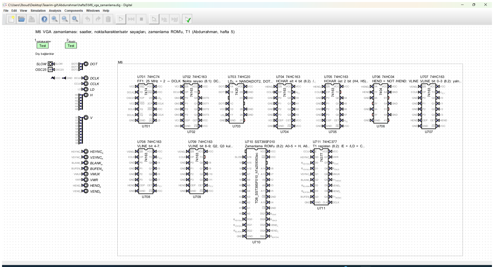
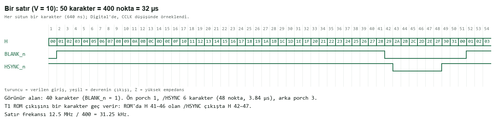
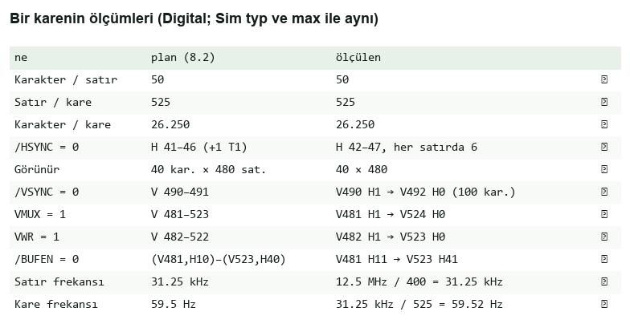
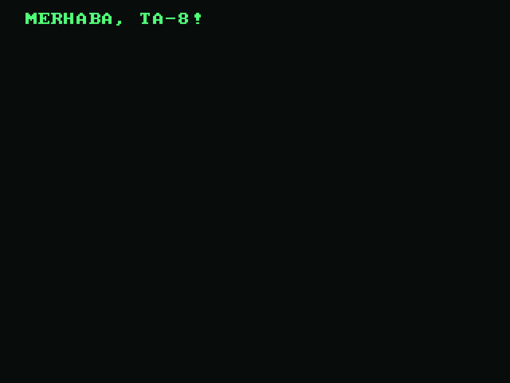
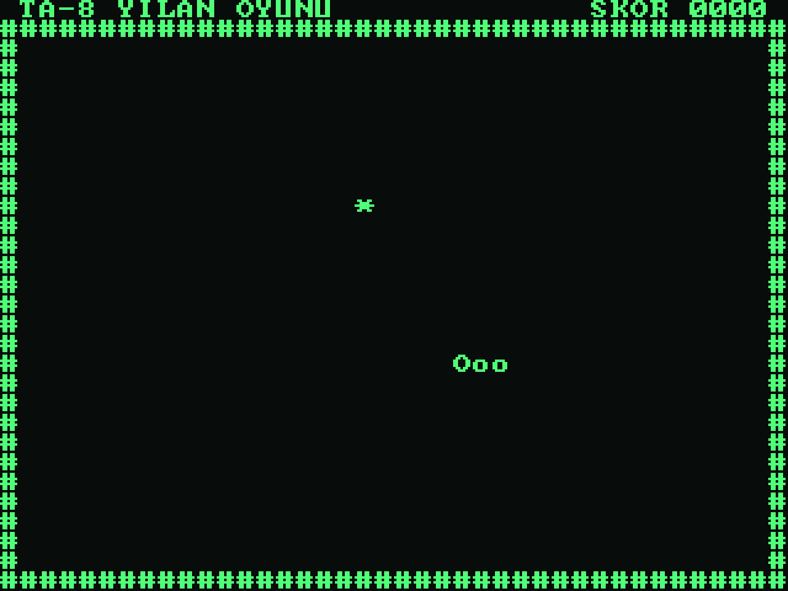

TA-8: 5. hafta raporu
Ad: TA-8. TA, Taha ve Abdurrahman'ın baş harfleri; 8, işlemcinin 8 bitlik olması. Terimlerin sade açıklaması Sözlük sekmesinde.
74HC entegrelerle breadboard üzerinde kendi 8-bit bilgisayarımız. Sonunda C ile yazılmış Snake oyunu onda çalışacak.
Bu hafta, kısaca
- C derleyicisi tamamlandı. C ile yazılan programları işlemcinin anladığı komutlara çeviriyor. Planın istediği C'nin tamamını kapsıyor; son parça (
switchiçin atlama tablosu) bu hafta eklendi. - İşlemciye hata ayıklama donanımı eklendi: programı istenen adreste durdurmak (breakpoint) ve Arduino'nun işlemciyi durdurup belleğe program yüklemesi (BUSREQ). İkisi de simülasyonda ve Digital'de denendi.
- Planda bulunan bir zamanlama hatası: ekran belleğine yazarken verilen bekleme kararı en kötü durumda yetişmiyordu. Tek kablo değişikliğiyle düzeldi; payı az olduğu için osiloskopla ölçülecek.
- İşlemci şimdi 63 entegre; hiçbir modülde plandaki sayı aşılmıyor.
- Ekran (M6) ve klavye (M7) simülasyonda tamam: Snake, işlemci + ekran + klavye çip seviyesinde, emülatörle sıfır farkla çalışıyor. KiCad şemaları ve eksiksiz malzeme listesi hazır (Abdurrahman).
Abdurrahman'ın bu haftaki çalışması kendi sekmesinde. Terimlerin açıklaması: Sözlük.
İlerleme
YazılımDeniz
- Komut seti ve ROM üreticileri bitti
- Assembler bitti
- Emülatörler ve testler bitti
- Çarpma, bölme, yazdırma kütüphanesi bitti
- Devre test vektörü üretici bitti
- C derleyicisi bitti
- Arduino iz ve yükleme yazılımı Aralık
- Snake oyunu (C) Aralık
DonanımAbdurrahman · M2, M5 ve hata ayıklama: Deniz
- M2 kontrol ünitesi (Deniz, Digital'de) bitti
- M5 bellek (Deniz, Digital'de) bitti
- M1 saat modülü (Abdurrahman) bitti
- M4 registerlar (A, IR, F) ve ALU (Abdurrahman) bitti
- M3 adres registerları (Abdurrahman) bitti
- İşlemcinin birleştirilmesi bitti
- Hata ayıklama mantığı (Deniz) bitti
- M6 VGA (Abdurrahman) bitti
- M7 PS/2 klavye (Abdurrahman) bitti
- KiCad şemaları, yerleşim planı sürüyor
Çubuklar işlerin plandaki sürelerine göre bölündü (SISTEM-PLANI bölüm 13–14). Yüzde yalnızca biten işleri sayar. Donanıma bu hafta planın 5. hafta işi olan "hata ayıklama mantığı" (breakpoint, BUSREQ) eklendi. Breadboard'da uygulama (Ocak – Mayıs) bu çubuğa sayılmıyor; donanım çubuğu simülasyon ve tasarım işlerinden oluşuyor (12 birim).
Yaptık
- Sistem planı ve TA-8 komut setibütçe 17.503 TL · 53 komut
- Simülasyon yazılımı ve kütüphaneassembler, 2 emülatör, çarpma ve bölme
- Saat, registerlar, ALU ve adres registerları Digital'de test edildiAbdurrahman · 15 modül testi
- Bütün işlemci Digital'de, emülatörle sıfır fark3 program · 33.170 çevrime kadar
- Kontrol ünitesi ve bellek Digital'de test edildiplanın kabul ölçütleri geçti
- C derleyicisi tamamlandıDeniz · planın C alt kümesi, switch tablosu dahil
- Hata ayıklama donanımı: breakpoint ve BUSREQDeniz · 63 entegre · Digital'de de
- Ekran ve klavye simülasyonda, Snake bütün sistemdeAbdurrahman · M6 + M7 · sıfır fark
- Malzeme listesiAbdurrahman · 92 entegre, yedekleriyle 131
Yapıyoruz
- Prototip a: saat modülü breadboard'daAbdurrahman · WAIT zamanlaması osiloskopla · parçalar gelince
- Parça siparişi ve giriş testlerientegreler ve pasifler yurt dışından tek paket · breadboard ve kablo yurt içinden
Yapacağız
- Snake oyunu C ileDeniz · gelecek hafta
- Digital'de ekranda yazıAbdurrahman · K3
- Breadboard'da kurulumOcak – Haziran 2027
- C ile yazılmış Snake demosuMayıs 2027
Kilometre taşları
- 9 Kas · 18 Kas'ta geçtiSaat modülünün testleri geçiyor
- 23 Kas · geçtiİşlemci simülasyonda emülatörle sıfır farkla çalışıyor
- 14 Ara · sıradakiSimülasyonda ekrana yazı
- 3 OcaTasarım donduruldu, yapıma hazır
- Nisan 2027Breadboard'da işlemci program çalıştırıyor
- Mayıs 2027Snake demosu çalışıyor
Gelecek hafta (1–7 Aralık)
- Deniz: Snake oyununu C ile yazmak; derleyicinin gerçek sınavı.
- Malzeme: bütün malzemenin siparişi (entegreler ve pasifler yurt dışından tek paket, breadboard ve kablo yurt içinden); gelen parçaların giriş testleri.
- Abdurrahman: Digital'de ekranda yazı (K3), PS/2 zaman aşımı kararı; ayrıntısı kendi sekmesinde.
Deniz
Bu haftanın konuları: C derleyicisi (tamamlandı) ve planın 5. hafta işi olan hata ayıklama donanımı; ayrıca planda bulunan bir zamanlama hatası. Notlar: Taha/hafta5.
Özet
| İş | Sonuç |
|---|---|
C derleyicisi tacc | Planın C alt kümesinin tamamını derliyor; son parça switch atlama tablosu bu hafta eklendi |
| Kod hızı | Plandaki hedeflerle aynı; ekrana metinde karakter başına 4 çevrim fazla |
| Doğrulama | 200 rastgele C programı (~4.400 ifade), ayrı bir Python hesaplayıcıyla aynı sonuç |
| Breakpoint | 2× 74HC688 + BRK flip-flop'u; adrese her okuma ya da yazmadan sonra duruyor |
| BUSREQ / BUSACK | Arduino işlemciyi en çok 7 saat darbesinde durduruyor, yolları alıyor, belleğe yazıp okuyor |
| Entegre sayısı | 59 → 63; hiçbir modülde plandaki adet aşılmıyor |
| Bulgu | Ekran belleği bekleme (WAIT) kararı en kötü gecikmede yetişmiyordu; tek kablo değişikliğiyle düzeltildi |
| Testler | Derleyici 52, bütün işlemci 29, Digital 37 test; hepsi geçiyor |
C derleyicisi: tacc
Derleyici, C ile yazılan programı TA-8'in komutlarına çeviren program. Zincir: C kaynağı → tacc → assembly → assembler → ROM imajı → flash'a yazılır. İlk hedef C ile yazılmış "MERHABA"ydı; derleyici bunu ve plandaki C alt kümesinin tamamını geçiyor.
#include "hw.h"
void yaz(char satir, char sutun, const char *s)
{
volatile char *v = VRAM + satir * STRIDE + sutun;
while (*s)
*v++ = *s++;
}
int main(void)
{
yaz(1, 2, "MERHABA, TA-8!");
LEDS = 0x55;
return 0;
}
> py -m tacc examples/merhaba.c -o build/merhaba_c.asm --run
build\merhaba_c.asm: 89 satır assembly, ROM 253 byte, RAM 8020-8029 (10 byte) RefEmu: durdu (HALT) · 6943 çevrim (6.94 ms @ 1 MHz) · LED=01010101 ($55) | MERHABA, TA-8! |
| Elle yazılmış ile | merhaba.asm | merhaba.c |
|---|---|---|
| ROM | 66 bayt | 253 bayt (açılış kodu 127 + program 111 + metin 15) |
| Çevrim | 573 | 6.943 (6.228'i açılışta ekranı temizlemek) |
| Karakter başına | 37 çevrim | 41 çevrim |
Ne destekliyor, ne desteklemiyor
- Var:
char,signed char,int(16 bit),unsigned, işaretçiler, 1 ve 2 boyutlu diziler,enum,consttablolar (ROM'da),volatile; if/else, while, do/while, for, switch, break, continue, return; bütün operatörler;#includeve#define. - Yok (satır numaralı Türkçe hata veriyor): özyineleme, struct, long, float, fonksiyon işaretçisi, typedef, goto. İlk dördü planın ilk sürümünde de yok: 8 bitlik, 1 MHz'lik bir işlemcide yavaş ya da gereksiz.
Ürettiği kodun hızı
| C kodu | Plan | tacc |
|---|---|---|
a = b + c (int) | 24 çevrim | 24 |
*p = x | 11 | 11 |
if (x < y) | 19–20 | 19–20 |
| 2 parametreli çağrı + dönüş | 82 | 82 |
| Ekrana metin | 37 / karakter | 41 / karakter |
x = y * 10 | – | 116 |
Sabitle çarpma, çarpma rutini (~500–1.070 çevrim) yerine kaydırıp toplamaya çevriliyor.
Bu haftanın son parçası: switch için atlama tablosu
switch, bir değere göre birçok seçenekten birine gider. İki yolu var: değeri seçeneklerle tek tek karşılaştırmak ya da her seçeneğin adresini tutan bir tablodan doğrudan atlamak (JMPI komutuyla). Az seçenekte karşılaştırma, çok seçenekte tablo hızlı. Derleyici ikisinin ortalama süresini hesaplayıp hızlı olanı seçiyor:
| Değer | Karşılaştırma, case başına | Tablo, sabit | Tablo ne zaman seçilir |
|---|---|---|---|
8 bit (char) | ~5 çevrim | ~38 çevrim | ~14 case'ten itibaren |
16 bit (int) | ~15 çevrim | ~52 çevrim | ~6 case'ten itibaren |
Tablo yalnız case'ler sıksa kullanılır (en çok 128 giriş, case başına en çok 3). Test: boşluklu case'ler, aralık dışı, eksi ve üst baytı dolu değerler, case'ten case'e düşme, break ve continue; iki emülatörde de doğru. Tablo kodu bilerek iki yerden bozulunca test kalıyor.
Nasıl test edildi
200 rastgele C programı (yaklaşık 4.400 ifade) hem derlenip emülatörde, hem de C kurallarını uygulayan ayrı bir Python hesaplayıcıda çalıştırılıyor; sonuçlar aynı olmalı. Bu yöntem geliştirme sırasında iki derleyici hatası yakaladı, ikisi de düzeltildi. Desteklenmeyen her yapının hata mesajı ayrıca deneniyor.
Hata ayıklama donanımı (plan 5. hafta)
Breadboard'da bir şey çalışmadığında makineyi durdurup içine bakabilmek için. Adımlama (her mikroadımda ya da her komutta durmak) zaten vardı; bu hafta iki parça eklendi.
Breakpoint: istenen adreste durmak
- Nasıl: iki 74HC688 (8 bitlik eşitlik karşılaştırıcı, art arda) adres yolunu 16 anahtarla karşılaştırıyor. O çevrimde bellek okunuyor ya da yazılıyorsa bir flip-flop (BRK) çevrimin sonunda 1 oluyor ve makine duruyor. GO butonu bir çevrim ilerletiyor; reset BRK'yi temizliyor.
- Ne zaman durur: o adrese erişen çevrimin sonunda. Komut adresine konursa komut okunmuş ama yürütülmemiştir; RAM adresine konursa (watchpoint) yazılan değer belleğe geçmiştir.
- Plana bir ek: breakpoint'i açıp kapatan bir anahtar (
/BP_EN). Yoksa anahtarlar 0000'dayken makine her açılışta ilk komutta dururdu.
BUSREQ: Arduino'nun belleğe program yüklemesi
- Nasıl: Arduino
/BUSREQhattını indiriyor. İstek iki flip-flop'la saate eşitleniyor; makine o anki çevrimi bitirip duruyor. BUSACK = 1 olunca işlemcinin adres ve veri yolu sürücüleri kapanıyor; Arduino yolları sürüp RAM'e yazıyor, geri okuyup doğruluyor, sonra bırakıyor. - Yüklemenin sonu: SW0 anahtarı 1 iken reset; açılış ROM'u 8000'e atlıyor ve yüklenen program çalışıyor.
Sonuçlar
| Deneme | Sonuç |
|---|---|
| Komut adresinde breakpoint | merhaba'da döngüdeki bir adres (001D): 15 erişimin her birinde durdu; GO ile devam edince emülatörle sıfır fark |
| RAM'de (watchpoint) | 8100'e 3 yazma ve 1 okumanın dördünde de durdu; durduğunda yazılan değer bellekteydi |
| Kapalıyken, reset | Breakpoint kapalıyken aynı adres durdurmuyor; reset BRK'yi temizliyor |
| BUSREQ, çalışırken | Dört farklı fazda istek: BUSACK en çok 7 saat darbesinde (çoğunlukla 3). Bu sırada yolları hiçbir CPU entegresi sürmüyor; ROM okundu, RAM'e yazılıp geri okundu; bırakınca program kaldığı yerden devam etti, sıfır fark |
| Yükleme baştan sona | Makine dururken 8000'e küçük bir program yazıldı (10 + 9 + … + 1), doğrulandı; SW0 = 1 ile reset sonrası çalıştı, LED'lerde 37h = 55; sıfır fark |
| Digital'de | Saat modülünde breakpoint ve BUSREQ senaryosu; bütün işlemcide breakpoint'te durma ve BUSREQ ile durup devam etme: geçti |
| Testler hata yakalıyor mu | 4 bilinçli bozma (BUSACK girişi, adres tamponlarının BUSACK'ı, /ACCESS, 688'de iki adres bacağı): 4'ü de yakalandı |
Entegre sayımı
| Modül | Plan | Kuruldu | Kalan |
|---|---|---|---|
| M1 Saat | 14 | 11 | 3: yavaş saat (NE555), saat kaynağı seçici, buton ve reset temizleme |
| M2 Kontrol | 13 | 13 | – |
| M3 Adres | 22 | 22 | – |
| M4 Veri/ALU | 8 | 8 | – |
| Yardımcı kapılar | 4 | 3 | 1: ikinci 74HC00 gereksiz çıktı |
| M5 Bellek | 6 | 6 | – |
| Toplam | 67 | 63 | 4 |
Arduino tarafının yazılımı bu protokolle yazılmıştı; eksik olan makinenin içindeki donanımdı. Arduino Mega sipariş edilecek; sketch donanımda henüz denenmedi.
Bulgu: ekran belleği bekleme (WAIT) kararı
Ekran belleğine (VRAM) yalnızca ekranın boş çizildiği anlarda yazılabiliyor; o an değilse işlemci beklemeli. Bekleme kararı saat çevriminin bir fazı içinde, 250 ns'de verilmek zorunda.
- Plandaki hesap: ~236 ns, yetişiyor.
- Simülasyon: en kötü gecikmelerle, flip-flop'un kurulum süresi dahil 272 ns: yetişmiyor. Beklenmesi gereken yazmalar beklemeden geçer, ekranda bozulma olurdu. Tipik gecikmelerle sorun yok.
- Hesaptaki eksik: süre yanlış yerden sayılmış (bir flip-flop gecikmesi, en kötü ~44 ns, sonradan başlatılmış) ve kurulum süresi eklenmemiş.
- Düzeltme: kararı üreten 74HC138'in G1 bacağı VCC yerine CLK'ye. Mantık aynı, yoldan bir kapı kalkıyor: en kötü 247 ns.
- Kalan risk: pay yalnız ~3 ns; prototip a'da osiloskopla ölçülecek.
| Yol | Simülasyon (tipik / en kötü) | Elle hesap | Pencere |
|---|---|---|---|
| Bellekten oku, ALU'dan geçir, A'ya yaz | 254 / 393 ns | 254 / 403 ns | 750 ns |
| Mikrokod ROM'unda arama | 94 / 152 ns | 94 / 152 ns | 250 ns |
| WAIT kararı, ilk tasarım | 111 / 272 ns | ~236 ns | 250 ns |
| WAIT kararı, düzeltilmiş | 102 / 247 ns | – | 250 ns |
İlk iki yolda simülasyon elle hesabı doğruladı. Gecikme tablosunun bir kısmı tahmin; değerler yaklaşık. Hız denemesi: 1,5 MHz'de de sıfır fark (yalnız WAIT en kötü gecikmede yetişmiyor), 2 MHz yalnız tipik gecikmelerle çalışıyor; planın öngörüsüyle aynı.
Testler
- Derleyici (
test_tacc.py): 52 test; rastgele programlar, kontrol akışı, fonksiyonlar, işaretçiler, switch tablosu, hata mesajları. - Bütün işlemci (
test_hw_cpu.py): 29 test; sıfır fark, reset, adımlama, WAIT, zamanlama, breakpoint, BUSREQ ve yükleme. - Digital (
test_hw_digital.py): 37 test; modüller, kabul ölçütleri, bütün işlemci, breakpoint ve BUSREQ.
Gelecek hafta
- Snake oyununu C ile yazmak: derleyicinin gerçek sınavı.
- Gelen parçaların giriş testleri (liste: 4. hafta raporu).
Abdurrahman
Bu haftanın konuları iki bölüm: 5, M6 VGA zamanlaması Digital'de; 5.1, M6'nın tamamı ve M7 klavye projenin netlist'inde, Snake bütün sistemde, KiCad şemaları ve malzeme listesi. Notlar: Abdurrahman/hafta5 · Abdurrahman/hafta5.1.
Özet
| İş | Sonuç |
|---|---|
| M6 zamanlaması (5) | 11 entegre (U701–U711) Digital'de; bir kare planla birebir: 50 × 525 karakter, satır 31,25 kHz, kare 59,5 Hz |
| M6 tamamı (5.1) | 19/19 entegre ana netlist'te; karakter hattı, VRAM, font ROM'u, çıkış katı. Görüntü 480 × 320 noktanın hepsinde beklenenle aynı |
| CPU + M6 | merhaba.asm gerçek 25 MHz VGA zamanlamasıyla, emülatörle sıfır fark; pencere dışında VRAM yazması yok |
| M7 PS/2 klavye (5.1) | 6/6 entegre + 2N7000, diyotlar, RC; gerçek PS/2 çerçeveleriyle klavye.asm sıfır fark |
| Snake, bütün sistem | CPU + M6 + M7 çip seviyesinde, 43 VGA karesi, 13 hamle, iki ok tuşu: emülatörle sıfır fark |
| KiCad şemaları | Netlist'ten otomatik: py cli.py hw kicad; PDF |
| Malzeme listesi | 92 entegre gerekli, yedekleriyle 131; BOM.md ve LCSC yükleme dosyası |
| Entegre sayısı | Bütün sistem: plan 92, netlist 88; eksik 4'ü bilinen (M1: NE555, 74HC153, 74HC14; AUX: gereksiz 74HC00) |
| Bulgular | ÷2 flip-flop'u en kötü köşede 25 MHz'e yetişmiyor; VD0–7 yüzüyordu (pull-down eklendi); PS/2 zaman aşımı kararı |
M6 VGA zamanlaması, Digital'de
Ekran modülünün saat ve sayaç kısmı: 25 MHz osilatörden nokta saati, nokta / karakter / satır sayaçları, zamanlama ROM'u ve çıkışları karakter sınırında yakalayan T1 registerı. Bağlantılar SISTEM-PLANI bölüm 8.1–8.2'den çıkarıldı; her şey m6_uret.py ile yeniden üretilebilir.

| Entegre | Görev |
|---|---|
| U701 74HC74 | ÷2 (25 MHz → DCLK 12,5 MHz) ve LD flip-flop'u |
| U702 74HC163 | Nokta sayacı (0..7) |
| U703 74HC20 | Nokta 7'yi yakalar, LD'yi üretir |
| U704, U705 74HC163 | Karakter sayacı HCHAR (0..49) |
| U706 74HC04 | HEND: satır sonunda satır sayacına izin |
| U707–U709 74HC163 | Satır sayacı VLINE (0..524) |
| U710 SST39SF010 | Zamanlama ROM'u: /HSYNC, /VSYNC, BLANK_n, /BUFEN, /HEND, /VEND, VMUX, VWR |
| U711 74HC377 | T1: ROM çıkışlarını karakter sınırında yakalar |
Testler
| Test | Sonuç |
|---|---|
| 1. Nokta ve karakter saatleri | DCLK 12,5 MHz; nokta 0..7; her 8 noktada karakter + 1 (640 ns). Digital test aracında geçti |
| 2. İki satır | H 0..49; görünür 40 karakter; /HSYNC 6 karakter; satır sonunda V + 1. 1.632 adım, geçti |
| 3. Tam kare | Digital'de 2 kare (924.000 osilatör periyodu): bütün ölçümler planla aynı |
| 4. Gerçek 25 MHz | Çip seviyesi simülatörde tipik gecikmelerle 0 ihlal, Digital ile 31.500 karakterde aynı |
| 5. Açılış | Rastgele açılış durumlarından (3 tohum) en geç 1 karede doğru kareye kilitleniyor |


Bulgu: ÷2 flip-flop'u en kötü köşede yetişmiyor
÷2 bağlantısında flip-flop'un gecikmesi + kurulum süresi 40 ns'den kısa olmalı. Simülatörün en kötü değerleriyle 44 + 15 = 59 ns; DCLK 6,25 MHz'e düşüyor. Değerlerin bir kısmı tahmin ve hepsini birden en kötü almak kötümser; datasheet'ler 4,5 V'ta ~25–30 MHz veriyor. Tipik çiplerle çalışır, ama pay az. Prototip c'de DCLK osiloskopla ölçülecek; yedek olarak 74AC74 siparişe eklendi.
M6 ve M7 netlist'te, Snake bütün sistemde
- M6'nın tamamı ana netlist'te (
cpu.m6_vga(), 19/19 entegre): zamanlamaya karakter hattı eklendi (3× 74HC157, VRAM, DB tamponu, font ROM'u, 74HC166, çıkış katı). VRAM taklidi kalktı. - Görüntü nokta nokta doğru: VIDEO çıkışı her DCLK'de yakalanıyor; 480 × 320 noktanın hepsi VRAM + font ROM'undan hesaplananla aynı. Gerçek font:
font8x8_basic(kamu malı). - VWR senkronlayıcısı: M1'deki U111'in boş iki flip-flop'u VWR'yi iki MCLK ile CPU saatine eşitliyor (plan 3.6).
- M7 PS/2 klavye (
cpu.m7_ps2(), 6/6 entegre + 2N7000, 2× 1N4148, RC): sanal klavyeden gerçek PS/2 çerçeveleri;klavye.asmemülatörle sıfır fark.

merhaba.asm yazıyı VRAM'e yazıyor, M6 sonraki karede çiziyor. Devrenin VIDEO çıkışından.
Sonuçlar
| Deneme | Sonuç |
|---|---|
| merhaba.asm, CPU + M6 | Sıfır fark, 573 çevrim; 14 VRAM yazması, hepsi satır 482–522 arasında (pencere içinde); CPU pencereyi ~15,4 ms bekliyor |
| Yalnız M6, 2 kare | 480 × 320 noktanın hepsi beklenen görüntüyle aynı |
| M7, 6 byte | Hepsi doğru; CPU geç okurken KCLK düşük tutuluyor (susturma), byte kaybolmuyor |
| klavye.asm, CPU + M7 | 5 tuş, sıfır fark; CPU + M6 + M7 birlikte de sıfır fark |
| Snake, bütün sistem | 730 ms simülasyon (571.201 çevrim), 34 tur, 13 hamle; emülatörle sıfır fark; 43 karenin hepsi VRAM'le nokta nokta aynı |
| Testler | test_m6_netlist.py 12, test_m7_netlist.py 10, test_kicad.py M6 ve M7 dahil |
Bulgu: VD0–7 yüzüyordu
VRAM penceresinde /BUFEN kapalıyken font ROM'unun girişleri boşta kalıyordu. 10k pull-down SIP dizisi eklendi (planda yok).
Bulgu: PS/2 zaman aşımı (karar ikimizin)
Yarım kalan bir çerçeveden 190 µs'den kısa süre sonra gelen byte bozuluyor (PS/2 cihazı 50 µs sonra gönderebilir). Nadir bir durum (tak-çıkar, gürültü). Kısaltmak mümkün: 22k / 4,7 nF ≈ 90 µs; 50 µs'nin altına inemez.
KiCad şemaları ve malzeme listesi
- KiCad şemaları netlist'ten üretiliyor (
py cli.py hw kicad→sim/kicad/): elle çizim yok, simülasyonla şema aynı kaynaktan. PDF: TA8_semalar.pdf. - Malzeme listesi: plandaki 92 entegreyle birebir; yedek kuralıyla 131 entegre. Entegreler ve pasifler LCSC'den tek paket, breadboard ve kablo Türkiye'den. BOM.md · BOM-lcsc.csv.
Gelecek hafta
- Digital'de ekranda yazı (K3):
py cli.py hw digitalM6'yı da dışa aktarmalı, Digital'in VGA bileşeniyle. - PS/2 zaman aşımı kararı (yukarıdaki bulgu).
- Parçalar gelince prototip c: gerçek monitörde DCLK ölçümü.
Sözlük
Raporda geçen terimlerin sade açıklaması: önce bu haftanın yeni terimleri, sonra 4. haftadan gelenler. Bir komutun işlemcide adım adım nasıl yürüdüğü: 4. hafta sözlüğü.
C'den makineye: tek satırın yolculuğu
| Basamak | Örnek | Kim yapar |
|---|---|---|
| 1. C | LEDS = 0x55; | İnsan yazar |
| 2. Assembly | LDA #$55 · STA $F800 | Derleyici (tacc) |
| 3. Makine kodu | 40 55 · 45 00 F8 | Assembler |
| 4. Çalışma | 2 + 4 = 6 çevrim, 1 MHz'de 6 µs; LED'ler 01010101 yanar | İşlemci (mikrokod adım adım) |
Bu haftanın terimleri
| Terim | Ne demek | Bizde |
|---|---|---|
| Derleyici | İnsanın yazdığı programı işlemcinin anladığı komutlara çeviren program. | Kendi derleyicimiz: tacc (Python ile) |
| C | Yaygın bir programlama dili. Küçük işlemciler için en çok kullanılan dil. | Snake oyunu C ile yazılacak |
| C alt kümesi | C'nin bir bölümü. Küçük bir işlemcide yavaş ya da gereksiz olan özellikler dışarıda bırakılır. | Var: sayılar, diziler, işaretçiler, if/while/for/switch. Yok: struct, long, float, özyineleme |
| Assembly | İşlemcinin komutlarının insanın okuyabileceği yazımı (LDA #$55 gibi). | Derleyici C'yi assembly'ye, assembler da assembly'yi sayılara çevirir |
| Switch, atlama tablosu | Bir değere göre birçok seçenekten birine gitme. Atlama tablosu: her seçeneğin adresini tutan liste; tek tek karşılaştırmak yerine doğrudan atlanır. | Derleyici hızlı olanı kendisi seçer |
| Breakpoint | Program belirli bir adrese gelince makineyi durduran düzenek. Hata ararken "buraya kadar doğru mu" diye bakmak için. | 2× 74HC688 + 1 flip-flop; adres 16 anahtarla girilir |
| Watchpoint | Bellekte belirli bir adres okunduğunda ya da yazıldığında durma. | Aynı devre; adres RAM'den seçilirse |
| BUSREQ, BUSACK | Dışarıdan bir cihazın "yolu bana ver" isteği (BUSREQ) ve işlemcinin "aldın" cevabı (BUSACK). Bu sırada işlemci durur, yolları bırakır. | Arduino bununla belleğe program yükler |
| Arduino Mega | Küçük, programlanabilir bir kart. Bizim hata ayıklama kartımız olacak. | İz kaydı ve program yükleme; sipariş edilecek |
| Osiloskop | Sinyalin zamana göre nasıl değiştiğini ekranda gösteren ölçüm aleti. | Nanosaniyelik zamanlama payları onunla ölçülecek |
4. haftadan
| Terim | Ne demek | Bizde |
|---|---|---|
| TA-8 | Projenin adı: Taha ve Abdurrahman'ın baş harfleri, 8 bitlik işlemci. | 19 Kasım'a kadar TD-8 |
| 8 bit | İşlemcinin bir seferde işlediği sayı 8 ikilik basamak: 0–255. | Adresler 16 bit: 64 KB'lık adres alanı |
| Entegre (74HC…) | İçinde mantık kapıları ya da bellek olan küçük çip. 74HC, standart mantık çiplerinin bir ailesi. | İşlemcide 63 entegre (ekran ve klavye hariç) |
| Breadboard | Lehim gerektirmeyen, çiplerin ve kabloların takılıp söküldüğü delikli tahta. | Ocak'tan sonra, 24 tahta |
| Komut, opcode | İşlemcinin anladığı tek tek emirler (topla, yükle, atla…) ve her birinin sayı kodu. | 53 komut, 88 opcode |
| Register | İşlemcinin içindeki küçük, hızlı hafıza hücreleri. | A (sonuç), X (işaretçi), PC (sıradaki komutun yeri), SP (yığın), IR (o anki komut), F (bayraklar) |
| Adres yolu, veri yolu | Bütün parçaları bağlayan ortak kablo demetleri. Adres yolu "nereye", veri yolu "ne" taşır. Aynı anda yalnız bir parça konuşabilir. | 16 + 8 kablo |
| ALU | Hesap birimi: toplama, çıkarma, mantık işlemleri, kaydırma. | İki flash'ta tablo: hesaplamıyor, cevabı tablodan okuyor. 25 işlem |
| Bayraklar (Z, C, N, V) | Son işlemin özeti: sonuç sıfır mı, elde var mı, negatif mi, taşma var mı. | Karşılaştırma ve dallanmalar bunlara bakar |
| Flash | Elektrik gidince silinmeyen, yeniden yazılabilen bellek çipi. | SST39SF010: mikrokod, ALU tablosu, program |
| RAM (SRAM) | Çalışırken okunup yazılan, elektrik gidince silinen bellek. | CY62256, 32 KB |
| Mikrokod | İşlemcinin tarif defteri: her komutun her adımında hangi kontrol hatlarının açık olacağını yazan tablo. Kablolarla değil tabloyla yapıldığı için bir komutu düzeltmek, flash'ı yeniden yazmak kadar kolay. | 3 flash çipinde |
| Kontrol kelimesi | Bir adımda 24 kontrol hattının açık/kapalı durumu. | Kontrol latch'inde tutulur, 24 LED'de görünür |
| Mikroadım, çevrim | Bir komutun tek adımı. | 1 MHz'de her adım 1 µs; komutlar 2–7 adım |
| Saat, 4 faz | Her adımı dört parçaya bölen zamanlama: önce yollar kurulur, sonra gerekiyorsa belleğe yazılır, en son sonuçlar registerlara kaydedilir. | 4 MHz saat, 1 MHz işlemci |
| WAIT | Ekran belleği o anda meşgulse işlemciyi kısa süre bekletme. | 12 Kasım'da bir zamanlama hatası bulunup düzeltildi |
| Kontrol ünitesi (M2) | İşlemcinin "beyni": komutu adımlara böler, her adımda doğru hatları açar. | 13 entegre |
| Adres çözme (M5) | Bir adresin hangi çipe gittiğine karar veren devre. | 0000–7FFF ROM, 8000–EFFF RAM, F000–F7FF ekran belleği, F800–FFFF giriş/çıkış |
| Modüller (M1–M8) | İşlemcinin parçaları: M1 saat, M2 kontrol, M3 adres registerları, M4 veri ve ALU, M5 bellek, M6 ekran (VGA), M7 klavye, M8 hata ayıklama. | M1, M3, M4, M6, M7 Abdurrahman; M2, M5, M8 Deniz |
| Emülatör | İşlemcinin bilgisayardaki taklidi. "Doğru cevabı" o verir; devre ona göre denetlenir. | İki emülatör: komut ve mikroadım seviyesinde |
| Çip seviyesi simülatör | Her entegreyi ve her kabloyu gerçek gecikmeleriyle taklit eden program. "Kablolar doğru mu, sinyaller zamanında yetişiyor mu" sorusunu cevaplar. | 25 entegre modeli |
| Digital | Ücretsiz devre simülatörü (Java ile çalışır). Devreyi entegre entegre kurup test tablosuyla otomatik dener. | İkimiz de bunu kullanıyoruz |
| Proteus | Ücretli devre simülatörü. | Bırakıldı; Abdurrahman da Digital'e geçti |
| Netlist (bağlantı listesi) | Hangi entegrenin hangi bacağının hangi kabloya bağlı olduğunun listesi. | Digital dosyaları ve breadboard tablosu buradan üretiliyor |
| Test vektörü | "Bu girişleri verirsen şu çıkışları görmelisin" satırlarından oluşan tablo. | Emülatörden üretiliyor |
| Kabul testi | Planın bir modül için koyduğu "bitti sayılmak için geçmeli" ölçütü. | Bu hafta M2, M4 ve M5'inkiler geçti |
| Sıfır fark | Devrenin, emülatörle her adımda adres, veri ve 24 kontrol hattında aynı olması. | 3 programda, 33.170 adıma kadar |
| Kilometre taşı (K1, K2) | Takvimdeki ara hedefler. | K1 saat modülü testleri, K2 işlemcinin emülatörle sıfır farkı: ikisi de geçti |
| Prototip (a–e) | Simülasyonda görülemeyen şeylerin (sinyal çınlaması, gerilim, gerçek monitör ve klavye) masada küçük denemesi. | Parçalar gelince |
| Breakpoint, BUSREQ | İşlemciyi istenen adreste durdurma; Arduino'nun işlemciyi durdurup belleğe program yüklemesi. | Bu haftanın konusu (Deniz sekmesi) |